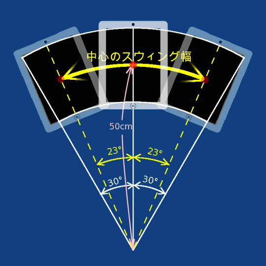

ここではまず、動作原理と使い方を理解するために、iPadを目の前に画面を自分に向けて持ってスウィングする。これらが理解できたら、次の項目でiPadをひっくりかえして相手側に向けてスウィングする。
- "Display"ボタンをタップし、縦位置に持ち替えてホームボタンが下側になるよう垂直に起こし、画面を自分に向け、腕を車のハンドルを握るくらい緩く前にのばす。
すると、今デザインしたサインの中央部が拡大されて全面表示になる。 - 最初は左右の傾きの角度にリアルタイムに反応して、サインの表示部分が移動する。すなわちゆっくり右に傾けていくと、扇形のサインの右端に向かって画面表示が移動していく。左に傾けるとサイン左端に向かって同様に。
（これを「非同期状態」という） - 片側に10度以上傾けると、画面の上辺の傾けた側の角にまたは
 のマーク（コーナーインジケーター）が点灯する。
のマーク（コーナーインジケーター）が点灯する。
このとき、アプリではその側に十分傾いたものと認識し、左右のインディケーターが交互に点灯するとスウィングが1往復したものと見なし、その所要時間を記録する。 - そのスウィング往復時間が以下の条件を満たすよう、なるべく同じテンポで左右のコーナーインジケーターが点灯することを確認しながらスウィングを繰り返す。
- 往復の時間が0.5～5.0秒(片側24～240拍(BPM)）の範囲
- 続く３往復がその平均とどれも±３０％の誤差以内
- スウィングのテンポを一定に保つには、テンポが一定の音楽のリズムに合わすとよい。
本体内蔵iPodで音楽を掛けた状態で同時にSwingSignを使うこともできる。
または、メトロノームのアプリを別途iPhoneかiPod Touchで起動してそれに合わせてもよい。 - 参考：メトロノームアプリ：
- アプリ名：Metronome（無料）
- http://itunes.apple.com/app/metronome/id287965434?mt=8
- テンポは上記範囲内で同期状態（後述）が機能するものの、遅すぎるとサイン全体を読みとるのに時間がかかり、速すぎると画像がブレて読みづらくなる。片側６０拍＝１秒に１回程度がサインを読みやすい。時計の秒針に合わせてスウィングしてもよい。
120拍以上の音楽に合わせる場合は２拍に１回と半減させてスウィングすると読みやすくなる。 - サインを表示する扇型の領域は、iPadを持ってスウィング（＝振り子運動）したときの画面の軌跡であるが、その幅の中心（＝iPadの中心）までの振り子運動の半径は50cm。振り幅は画面領域の軌跡が左右30度づつ。よってiPad本体の中心は左右23度づつ傾ける。
 - わかりやすい目安としては、扇型のスウィングの幅は画面上端の左右が60cmで肩幅から5cmはみ出す程度。
画面下端はiPadの画面（枠は除く）の短い辺で３つくらいで、肩幅程度。
画面上端からスウィングの中心までも60cmなので、スウィングの上側両端と回転の中心を結ぶと一辺60cmの正三角形となる。

- スウィングのテンポが前述の同期の条件を満たすと、"Sync"のマークと左右のどちらかの矢印が交互に点灯し、「同期状態」になったことを表す。（これら合わせて「Syncインジケーター」と呼ぶ）
 または
または 
- 同期状態では、直近3回のスウィングの平均のテンポで現時点の傾きを推測計算した角度を使って画面のサインの表示部分を移動する。
"-> Sync" は、その推測角度が画面に向かって左端から右方向へスウィングしていることを表し、"Sync <-" はその逆方向を表している。自分のスウィングをこの矢印の方向に合わせるように調整すると、テンポが一定に保たれ、空間に静止状態でサインが見える。 - スウィングが不適切であると、サインが静止して見えない。よくあるサインの見え方と原因・対処は次のとおり。
- スウィングしている方向と逆方向にサインの表示が流れる。縦長に見える。
- →スウィングの幅が狭い。肩幅より5cm外くらいまで、スウィングの幅を広げる。
逆にスウィングする方向にサインが流れる場合は、幅が広すぎなので狭める。 - スウィングしている回転方向にサインの文字が回転する。画面向かって右方向に動かしている場合は時計回り。左方向のときは反時計回り。
- →扇型の回転半径が小さい。スウィングの上側両端と回転の中心を結ぶと一辺60cmの正三角形となるよう半径を大きくする。
- ランダムにサインが左右にぶれる。
- →スウィングのテンポ（一往復の時間）にムラがある。Syncインジケータの左右に点灯する矢印に自分のスウィングを合わす。または、音楽やメトロノームのリズムに合わせてスウィングする。
- 上記でスウィングを調整してもサインが静止して見えない場合、傾きの推測計算に使われている、センサーとのズレ補正値、両端での停止時間の割合等の初期設定値が自分のスウィングのくせに合っていない可能性がある。これらは設定画面で調整できるので、その画面の「各部の説明」を参照。
- サインのスウィング表示を終えるときは、iPad本体を画面を上に水平にする。すると、デザイン画面に戻る。
- 加速度センサーによる最新の１往復が上記同期状態の条件を満たさなかった場合、非同期状態に戻る。
非同期状態からもiPad本体を画面を上に水平にすると、デザイン画面に戻る。
- 上記は概要を理解するため画面を自分に向けて行った。しかし、本来の使い方は、画面を相手に向けてスウィングする。そうすると、画面の状態がよくわからない。
そこで、相手から見たときの印象の確認とスウィングの練習のときに限り、「鏡面（左右反転）表示」のスイッチボタンを「オン」にする。すると、サインの左右が逆転した鏡像反転で表示されるので、これを大きな鏡に向かってスウィングすると、鏡像の鏡像 = 元画像、すなわち、デザインしたときと同じ形で、スウィング表示が実物大で確認できる。